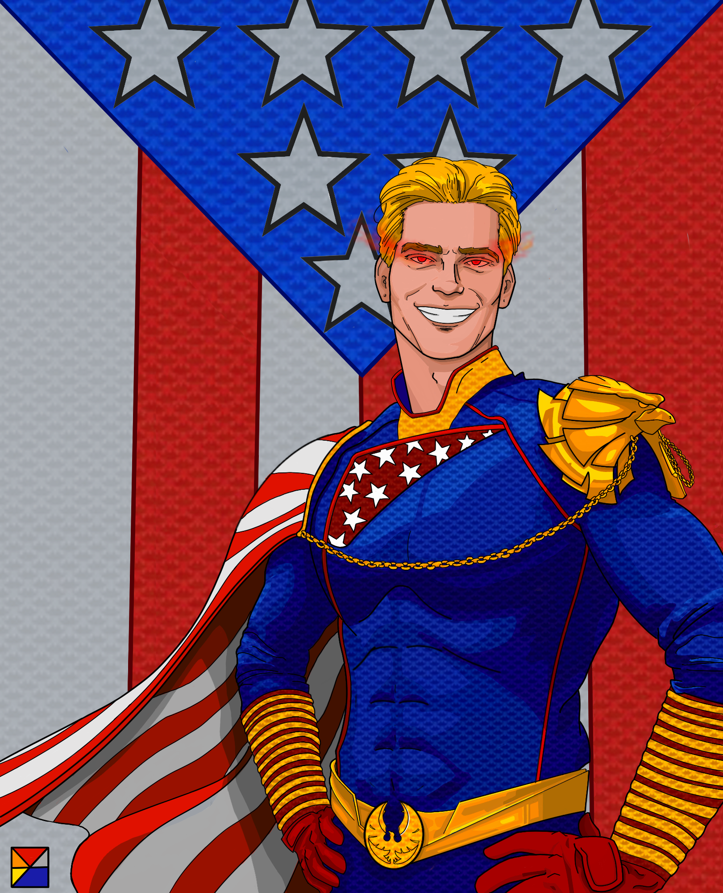

The Homelander
"The Homelander" was created on July 14, 2022, using my Apple iPad, Apple Pencil, and Autodesk Sketchbook drawing software. This stylized piece depicts Antony Starr in his role as "The Homelander" from the series The Boys. It was a massive project that required meticulous attention to texture, design, and poster layout. The custom superhero costume draws inspiration from the comic variant of the series. I'm particularly proud of this piece as it exceeded my expectations, especially in the texture of the suit, the detailed line art in the hair, and the nuanced shading around the face and hair.